SZ
소제동 Soje-dong · 옛 철도관사촌
「CTS – 보류된 시간」

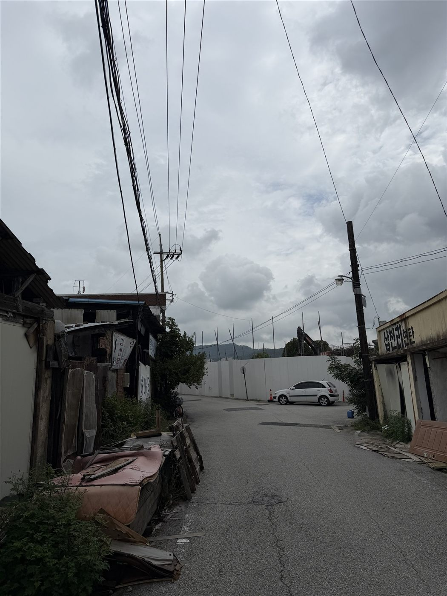

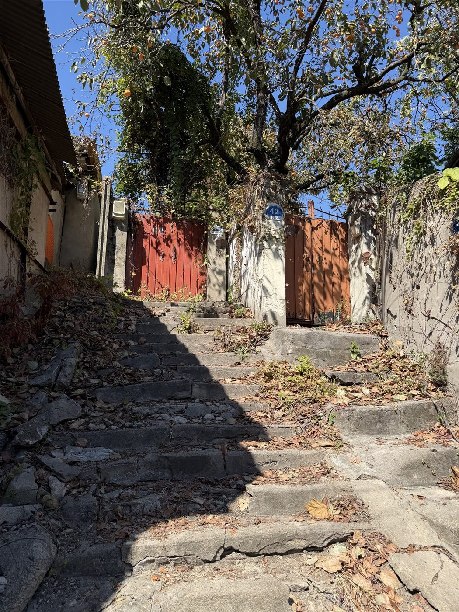

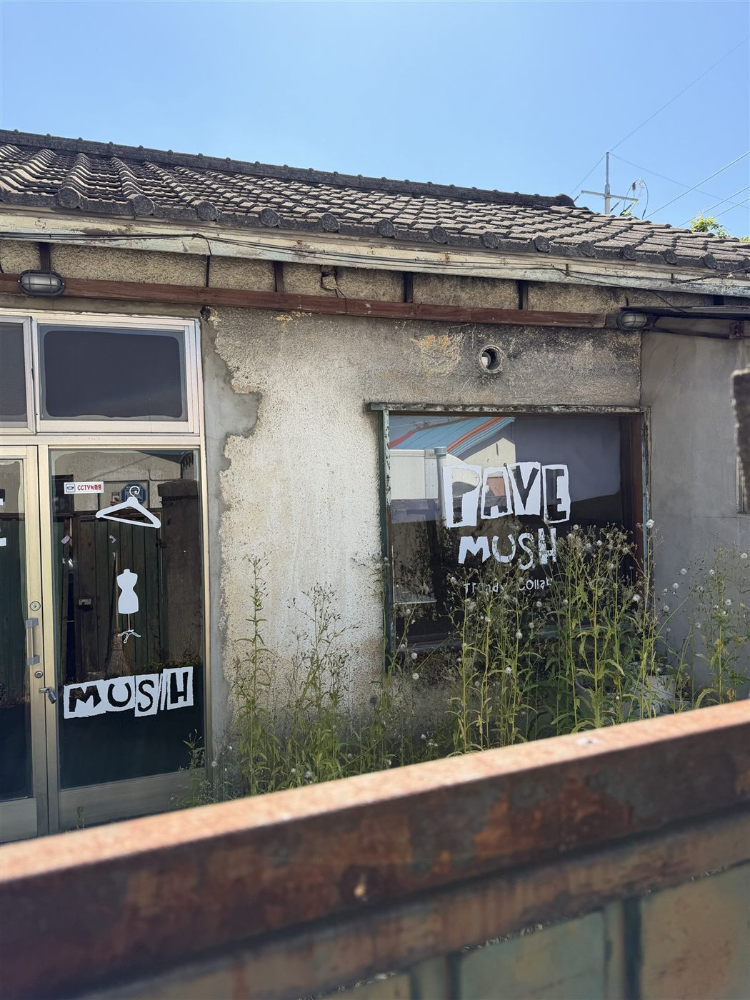

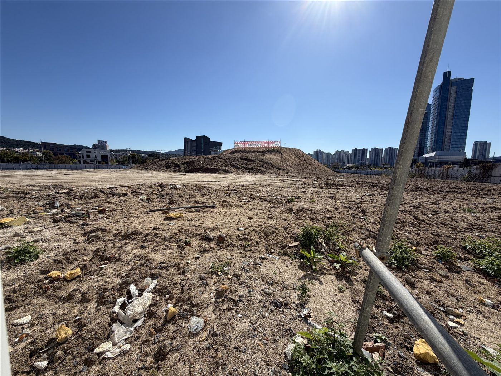
1920–30년대에 지어진 소제동 철도관사촌에는 재개발(삼성4구역 · 관리처분인가 2024.12 · 1,350세대), 개발 보류(존치관리구역), 도시재생(소제호 · 아트벨트), 폐업, 방치, 철거가 한 구역 안에 겹쳐 있습니다. 같은 관사가 어느 구역에 속하느냐에 따라 보존 대상이 되기도, 지장물이 되기도 합니다.
관리국은 기계가 인식하는 것을 기준으로 수집하지 않습니다. 도시가 이미 어떻게 판정했는가를 기준으로 수집합니다. 수집한 사물의 출처와 시간층위는 판정하지 않으며, 판정 결과는 카드에 기록하지 않고 조사 화면에 누적합니다.
조사 방법
- 조사 범위는 옛 철도관사촌이었던 소제동 주변 일대입니다. 관사 건물 주변과 그 일대의 골목 · 길가 · 공터 · 철거지를 걸으며 사물을 수집합니다. 이 일대에는 철도관사촌이던 시간, 행정이 개발을 보류해 둔 시간, 민간 사업이 들어온 시간이 한 구역 안에 겹쳐 있어, 주변 일대를 조사하면 관사촌 · 행정 보류 · 민간 사업 유입 같은 서로 다른 행정적 · 역사적 층위의 사물이 함께 수집됩니다. 2026년 8월부터 10월까지 현장 조사를 13–15회 다녀왔습니다.
- 수집은 공공 도로·길가에서만 합니다(사유지 진입 없음). 위치는 브이월드 도로명주소 건물에 대조하고, 일시는 사진 촬영시각을 씁니다. 일대에 남은 옛 관사 47동은 지나며 상태만 봅니다 — 사람 · 빈집 · 영업 · 방치 · 철거.
- 대전광역시 고시 제2022-142호의 도시계획시설 결정도(기정 / 변경)를 눈으로 대조해 8일 사이에 다시 그려진 경계를 기록합니다.
- 수집 사물은 번호 명패와 등록정보(위치 · 놓인 바닥 · 행정적 지위)를 붙여 판정 장치에 넘깁니다. 레일 카메라가 왕복하며 사물을 읽고, 왕복 1회를 판정 1회차로 셉니다. 명패가 없는 식물은 판정 체계 밖에 둡니다.

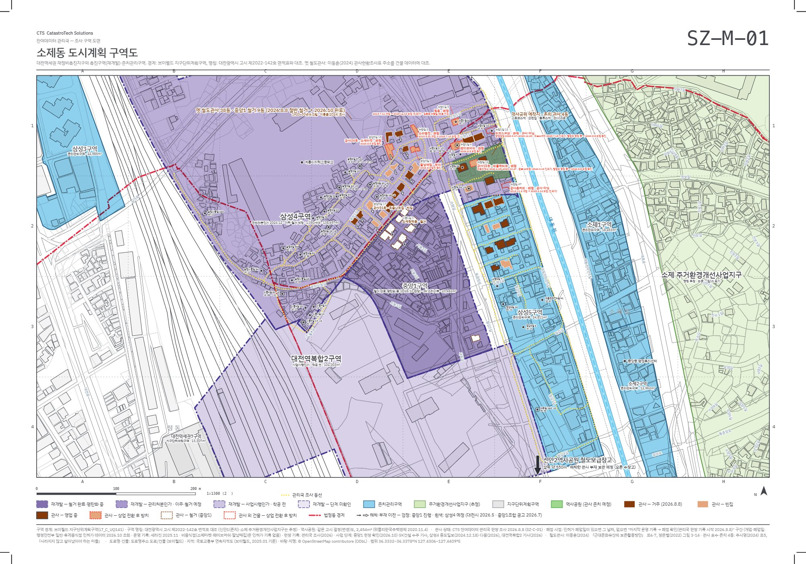

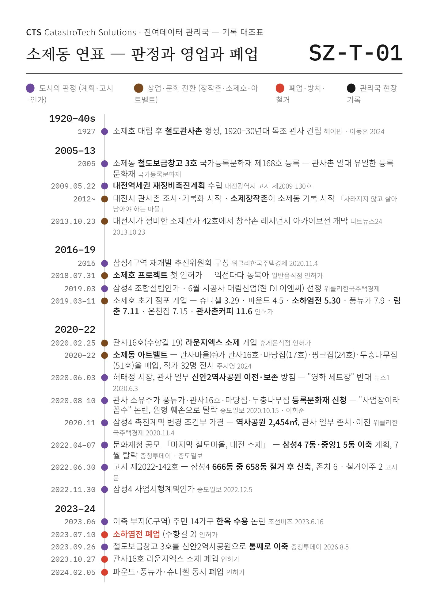

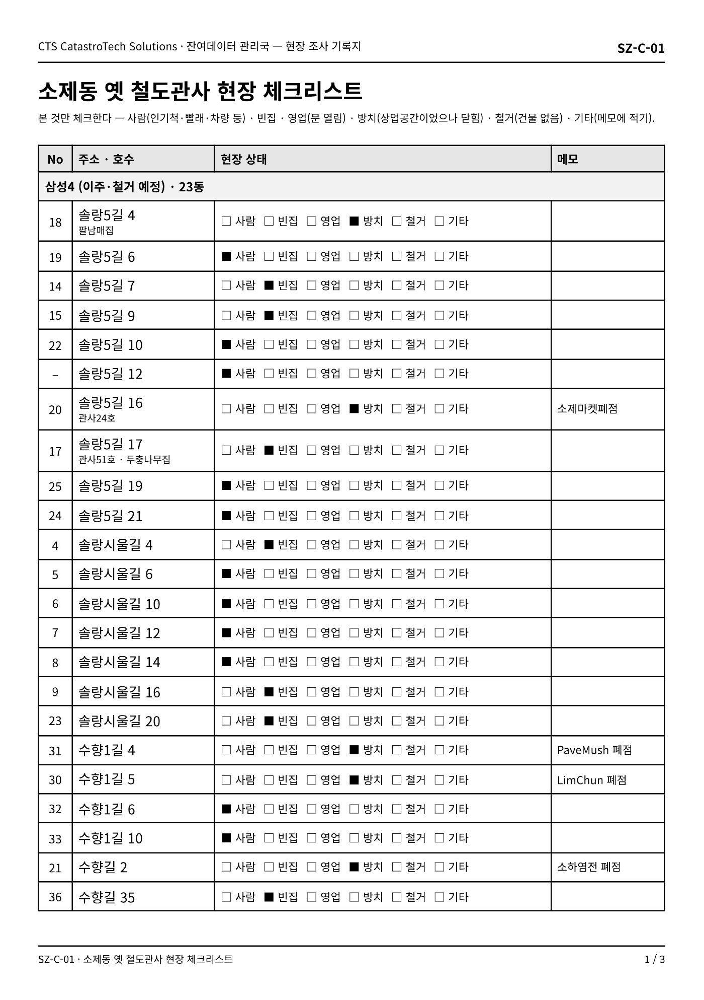

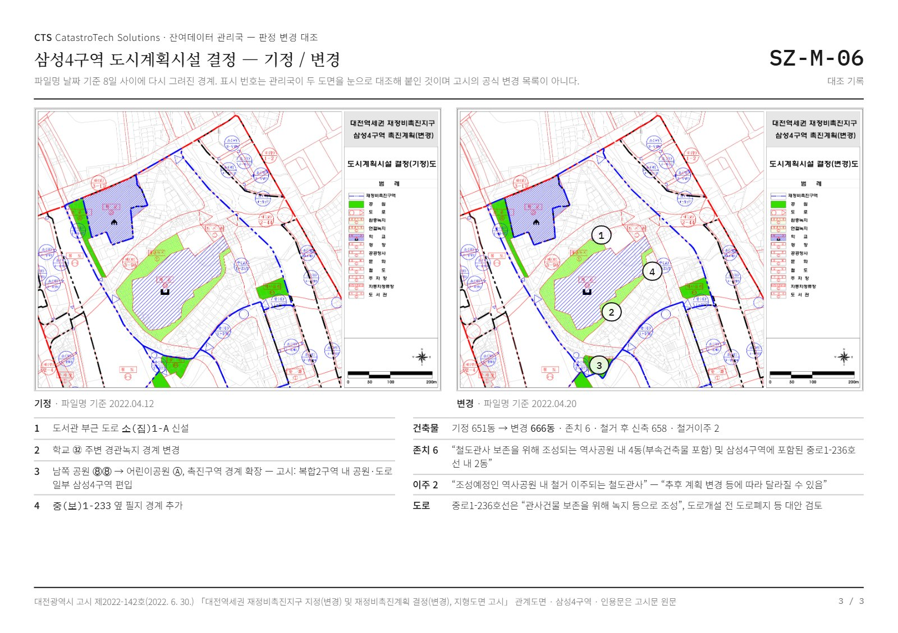

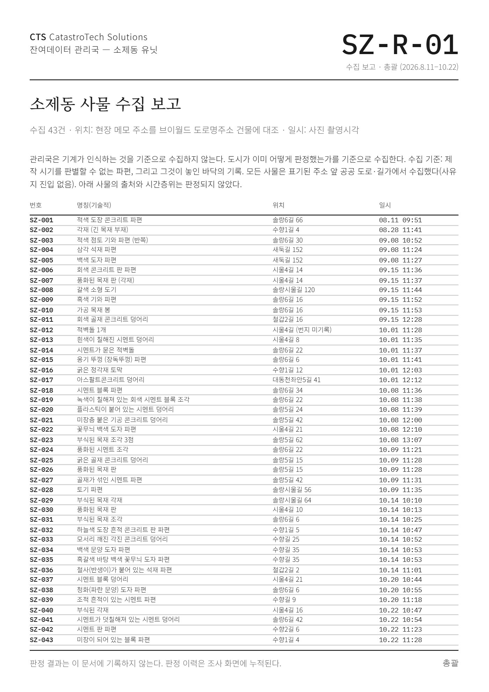

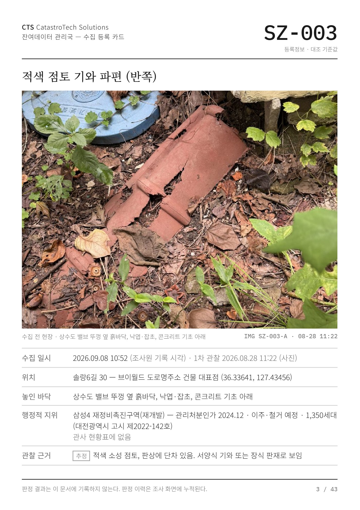

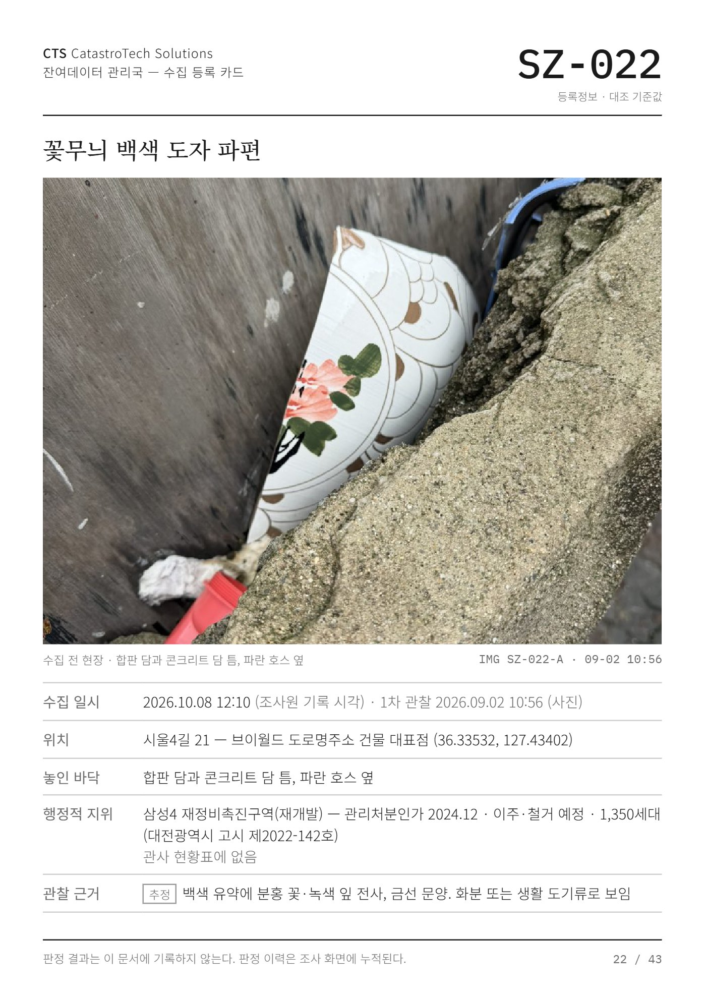
조사 자료
SZ-M-01소제동 도시계획 구역도 — 재개발 구역 · 옛 철도관사 · 조사 동선 · 수집 지점 (2절 가로, 1:1,300)SZ-M-02 · 03인용 도면 — 대전역세권 토지이용계획도 · 도시계획 구역 구분, 관리국 대조 기록SZ-M-04 – 06삼성4구역 도시계획시설 결정도 기정 / 변경 · 대조 기록SZ-T-01소제동 연표 — 도시의 판정 · 상업·문화 전환 · 폐업·방치·철거 · 관리국 기록 (1927 – 2026)SZ-C-01옛 철도관사 현장 체크리스트SZ-R-01사물 수집 보고 총괄 1장 + 수집 등록 카드 43장 (A5)
References 주시영, 「대전 소제동 사례로 본 민간주도형 도시재생사업의 특성 연구」, 서울대 석사논문, 2024 · 주시영·임저스틴희준, 『도시재생』 11(3), 2025 · 이동훈, 「근대문화유산의 보존활용방안 — 대전 소제동 철도관사촌을 중심으로」, 동국대 박사논문, 2024 · 최예선, 「사라지지 않고 살아남아야 하는 마을」 · 대전광역시 고시 제2022-142호 · 브이월드 · OpenStreetMap